Preparando uma VM Red Hat Enterprise Linux para Desenvolvimento
TutoriaisCompartilhe esse post nas redes sociais...
** **
**
Olá Homelabers!
Neste artigo de estréia pretendo apresentar um guia para a preparação de uma VM com o Red Hat para desenvolvimento em múltiplas plataformas.
Esta VM deve servir de base para outros artigos onde entraremos nos detalhes mais específicos no desenvolvimento de aplicações.
Nível: Fácil.
A idéia a produzir uma série modular de artigos de forma que, dependendo do objetivo de utilização, somente os componentes necessários sejam abordados.
Não poderia deixar de agradecer e cumprimentar o Valdecir Carvalho pelo convite e iniciativa.
Sobre o RHEL
Escolhi utilizar o RHEL pois é uma das distribuições mais sólidas e utilizadas no ambiente corporativo. Algumas plataformas estão homologadas para rodarem sobre ele o que garante um suporte adequado. É claro que podemos sempre usar outras distribuições porém, por experiência, algumas precisam de alguns truques extras para executar adequadamente alguns componentes.
Com a liberação de uma versão gratuita para desenvolvedores pela Red Hat, conforme publicado aqui neste blog, não vejo motivos para não se aprofundar na sua utilização, agora de maneira bem legal.
Virtual Machine
Utilizarei neste artigo o VMware que é um produto de ponta no mercado de virtualização. No entanto a VM pode também ser criada utilizando Oracle VM VirtualBox.
Recursos do Host
Estou utilizando um notebook Lenovo T430 com windows 7 conforme abaixo:
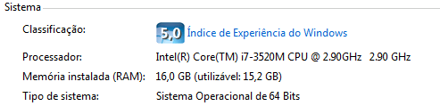
É importante também saber quantos cores possui seu processador para poder dimensionar melhor a utilização de recursos na VM. No caso do Windows 7 podemos utilizar o aplicativo _msinfo32.exe _e obter a informação conforme abaixo:
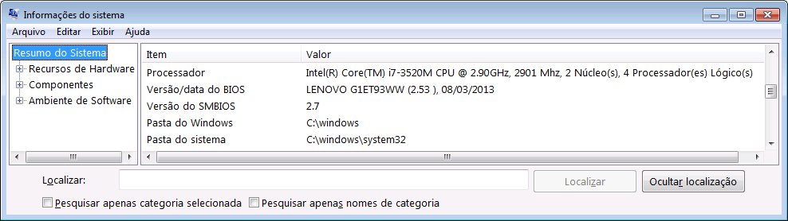
Neste caso temos 2 núcleos (cores).
Dependendo do objetivo da VM pode ser necessário consumir mais ou menos recursos do Host. Neste cenário o Host é o SO instalado na máquina (Windows 7) e o Guest é o que será instalado na VM (RHEL).
Començando
Vamos criar uma nova VM:
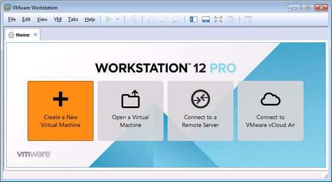
No diálogo Escolha _**Custom **_e clique em Next.
Deixe Hardware compatibility na opção default selecionada e clique em Next.
Após vamos selecionar a última opção para instalar o SO depois evitando que o VMware tome algumas decisões importantes por nós.
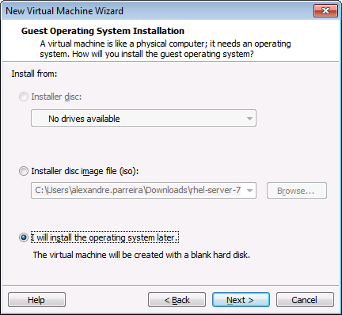
Clique em Next.
Escolha um nome e local onde serão armazenados os arquivos da VM.
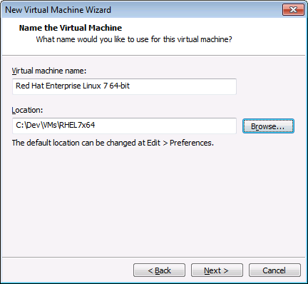
Clique em Next.
Vamos agora escolher o número de CPU disponibilizados para o Guest SO. Para mais informações sobre vCPUs acesse este link.
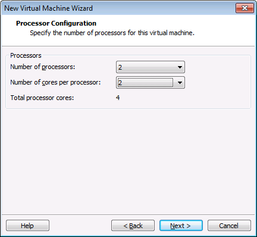
Clique em Next.
Agora vamos definir a quantidade de memória RAM estará disponível para o Guest. No meu caso vou utilizar o mais recomendado de 8 GB. Novamente esta quantidade pode variar conforme o objetivo da VM. E isto pode ser modificado futuramente.
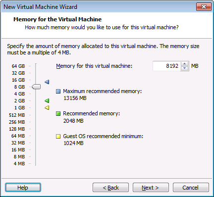
Clique em Next.
Deixaremos as configurações de rede no default. Futuramente, se tivermos necessidades específicas para o Guest como por exemplo possuir endereço de IP específico permitindo funcionar como servidor e até mesmo consumir serviços do Host, podemos mudar para o modo Bridged por exemplo.
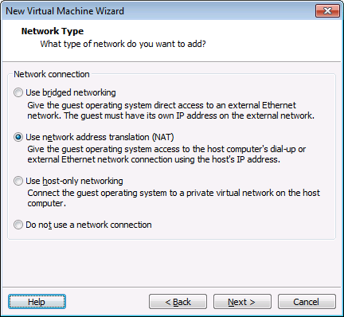
Clique em Next.
Nos dois próximos passos vamos também deixar o default.
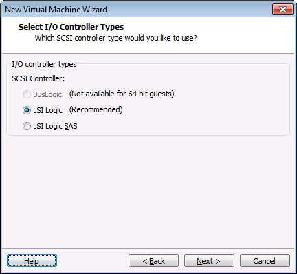
Clique em Next.
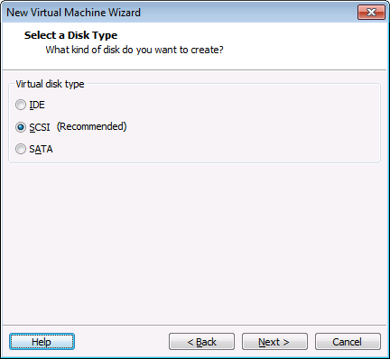
Clique em Next.
Agora vamos criar um novo disco virtual. Obviamente caso tivéssemos um disco criado e se estivemos movendo imagens de uma máquina para outra poderíamos utilizar as outras opções.
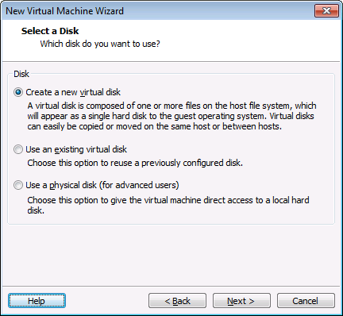
Vamos agora escolher o tamanho do disco que estará disponível para a VM. Como eu tenho uma idéia de minhas necessidades futuras eu vou começar com 50 GB mas o default é 20 GB. Dependendo da distribuição Linux sendo instalada a necessidade de espaço em disco pode ser muito menor.
Vamos também optar por armazenar em um único arquivo. No cenário projetado não há motivo por dividir em múltiplos arquivos. Casos específicos indicados para a divisão seriam os quais se está utilizando um sistema com limitação no tamanho máximo dos arquivos, como FAT32, ou se projetarmos discos a partir de 100 GB onde poderíamos começar a visualizar uma melhoria na performance.
Um outro ponto importante é que vamos escolher já alocar todo o espaço em disco informado (50 GB) para a VM. Por experiência posso dizer que alguns SO instalam corretamente porém, algumas instalações de componentes falham ao detectar o tamanho total do disco. Por isso é muito importante já alocar o espaço total do disco.
Há um post aqui no blog falando sobre estas opções aqui.
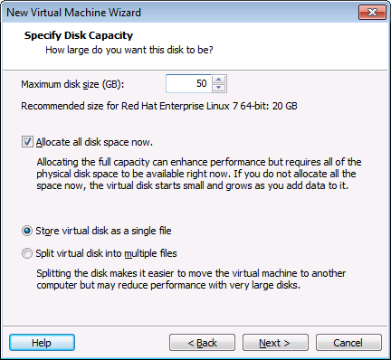
Clique em Next.
Depois confirme o nome do arquivo a ser criado e clique em Next.
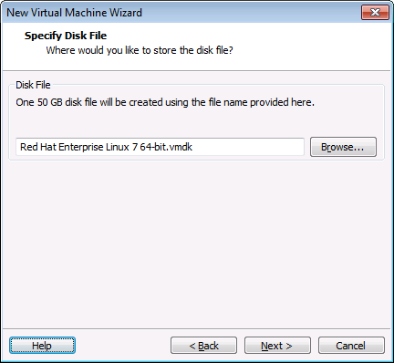
Pronto as configurações da nova VM estão definidas e vamos agora avançar para a instalação do RHEL como Guest SO na VM. Como definimos para alocar todo o tamanho do disco na criação o processo irá demorar um pouco mais.
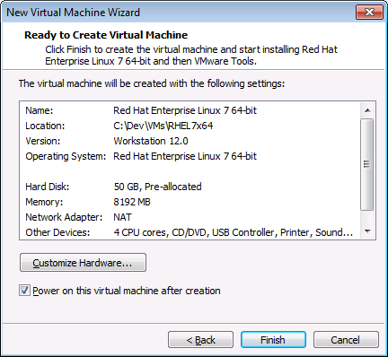
Clique em Finish.
Instalando o RHEL
Após a criação da VM estaremos com ela limpa para iniciar a instalação do RHEL.
No lado direto da janela clique em CD/DVD (SATA).
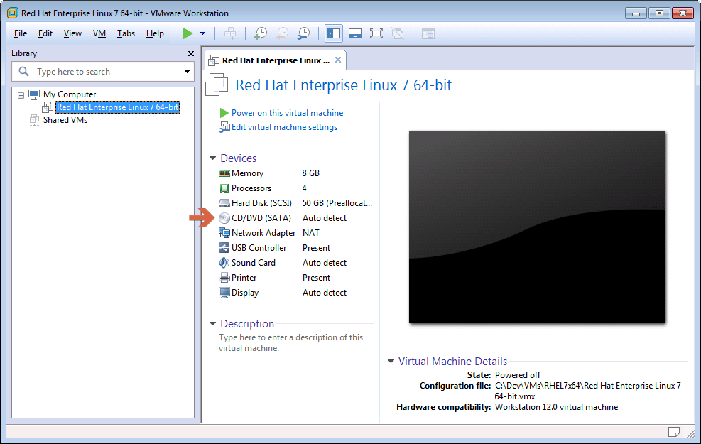
Agora vamos marcar a opção Use ISO image file e vamos selecionar a ISO que baixamos do site da Red Hat.
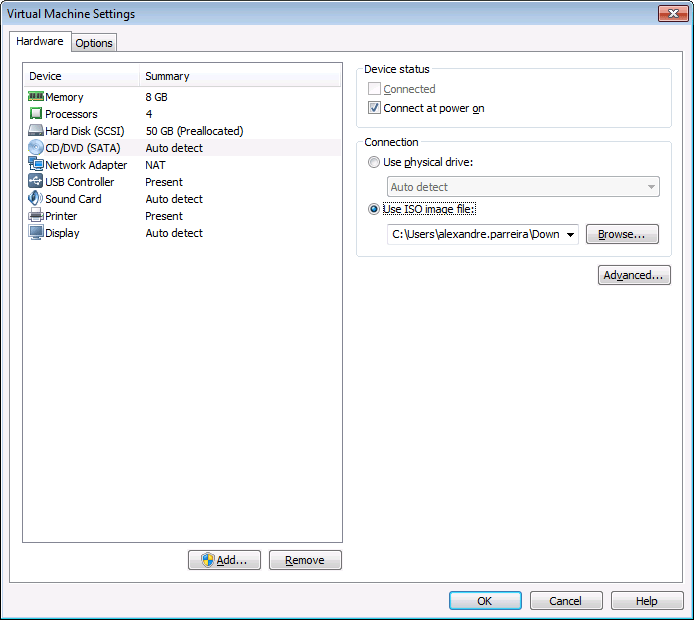
Clique em OK.
Vamos iniciar a VM clicando em Power on this virtual machine.
A VM irá inicializar a partir da imagem ISO montada na unidade de CD/DVD. Vamos selecionar a primeira opção para instalar o RHEL na VM. Para direcionar o input para a janela da VM basta clicar dentro da janela ou pressionar CTRL + G.
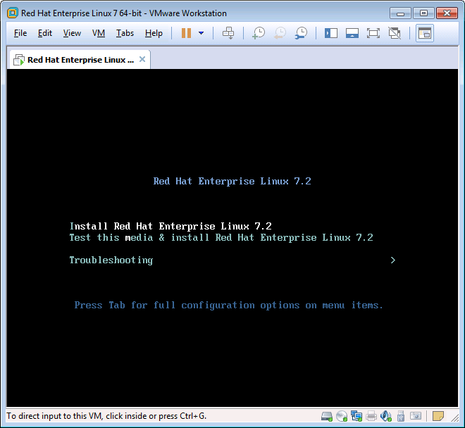
Pressione _Enter _para começar o processo de instalação.
Vamos manter a linguagem selecionada em English (United States). Esta é uma preferência pessoal e vocês podem ajustar conforme sua preferência.
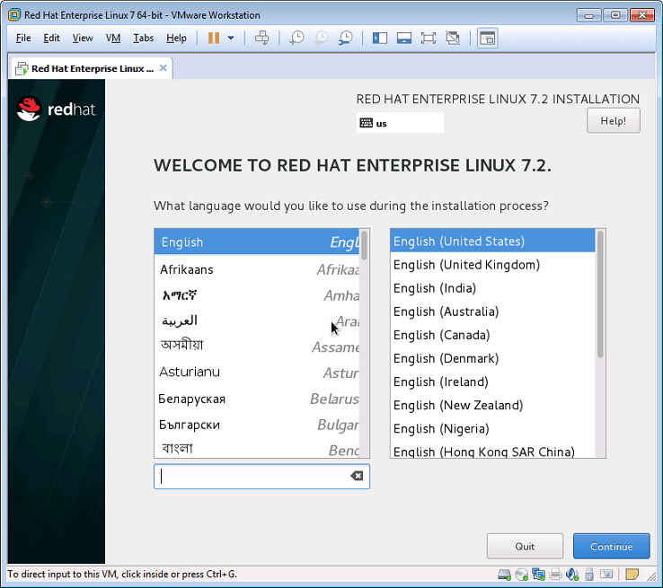
Vamos diretamente configurar a Network & Host Name para permitirmos que a definição dos parâmetros de instalação possa já obter dados da internet.
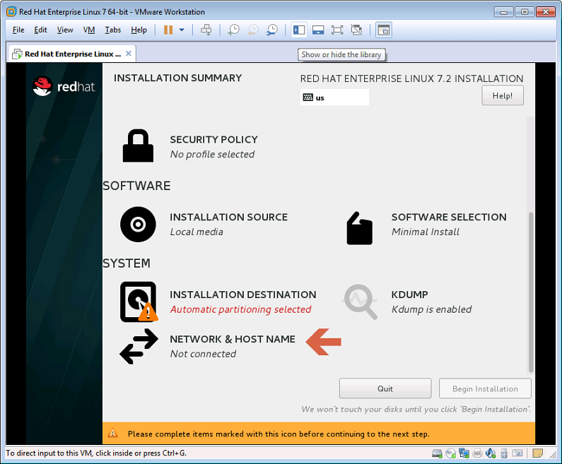
Dependendo do hardware que está disponível estas opções podem ser diferentes. Porém, em um ambiente básico estará disponível um adaptador de rede selecionado e vamos ativá-lo clicando no botão ON/OFF no canto superior direito.
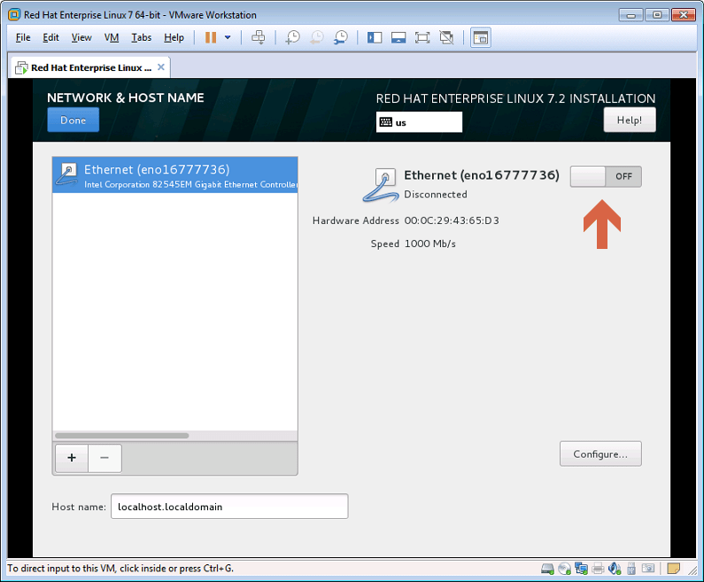
Após a ativação do adaptador de rede a VM deverá receber um endereço de IP e estar conectada à rede e internet.
Clique em _Done _no campo superior esquerdo da janela.
Vamos clicar em Date & Time.
Nesta janela selecione a posição de seu fuso horário clicando no posição no mapa e se necessário selecionando nas caixas superiores a região e cidade exatas. Vamos ativar também a opção Network Time para manter o horário atualizado com os servidores mundiais.
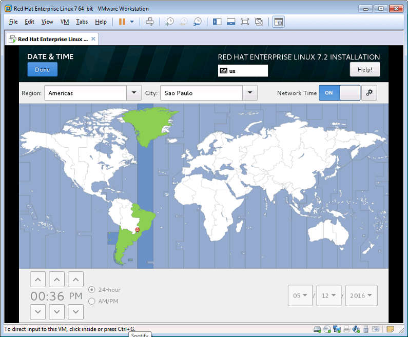
Vamos agora configurar o teclado. Para tanto clique em Keyboard.
Na janela seguinte vamos clicar no símbolo + no canto inferior esquerdo para adicionar um novo layout.
Na lista busque por Portuguese (Brazil) e clique em Add.
Remova o layout English (US) clicando no sinal de - no canto inferior esquerdo.
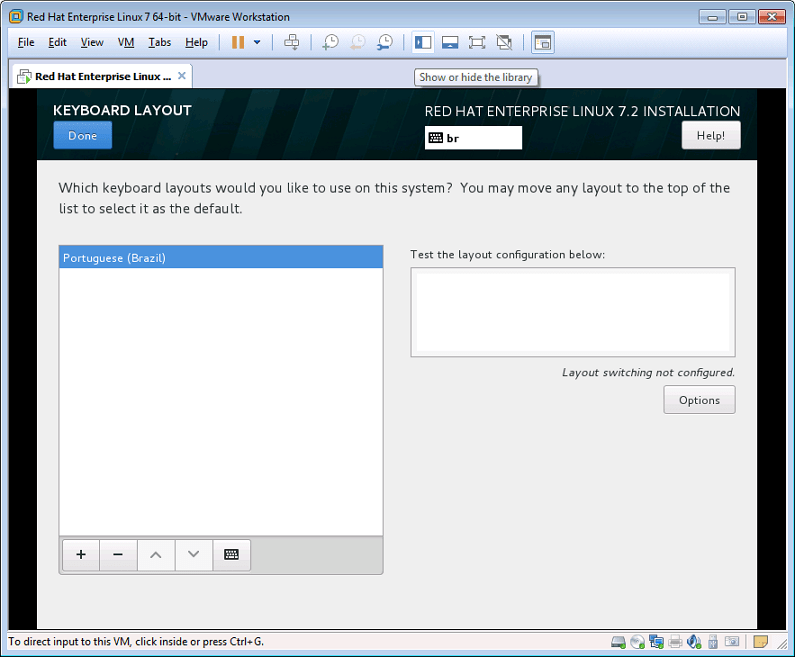
Sugiro testar o layout escolhido para evitar alguma dor de cabeça e trabalho adicional logo de início. Utilize a caixa Test… no canto superior direito para testar especialmente as teclas / \ . : | - _ ?
Clique em _Done _após terminar.
Vamos agora definir os softwares a serem instalados.
Cliquem em Software Selection.
Na caixa da esquerda, Base Environment, selecione Server with GUI. Desta forma teremos um sistema gráfico para trabalhar com o desenvolvimento de softwares.
Após selecionar a opção acima, na caixa da direita Add-Ons for Selected Environment, localize e marque a opção KDE. Assim terá a opção de usar o Gnome ou KDE, duas interfaces gráficas diferentes, conforme sua preferência.
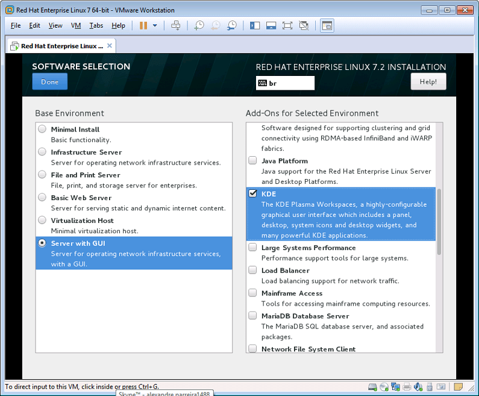
Clique em Done.
Vamos por fim definir as configurações de particionamento dos discos.
Clique em Installation Destination.
Basta clicar em _Done _para confirmar o particionamento automático do disco.
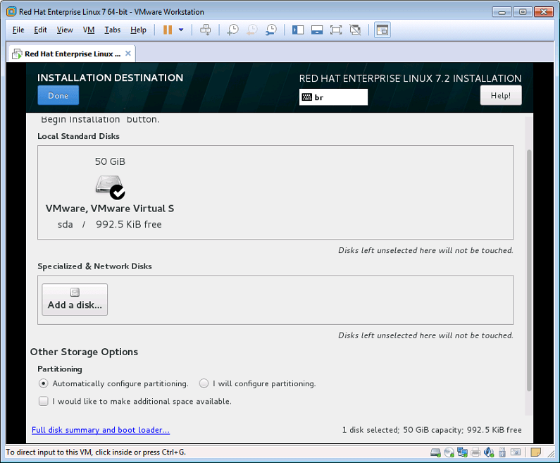
Após todos estas definições estamos prontos para prosseguir com instalação.
Clique em Begin Installation.
Enquanto o sistema é instalado vamos aproveitar e definir as senhas de Root e um usuário para acesso.
Clique em ROOT PASSWORD para definir a senha do ROOT.
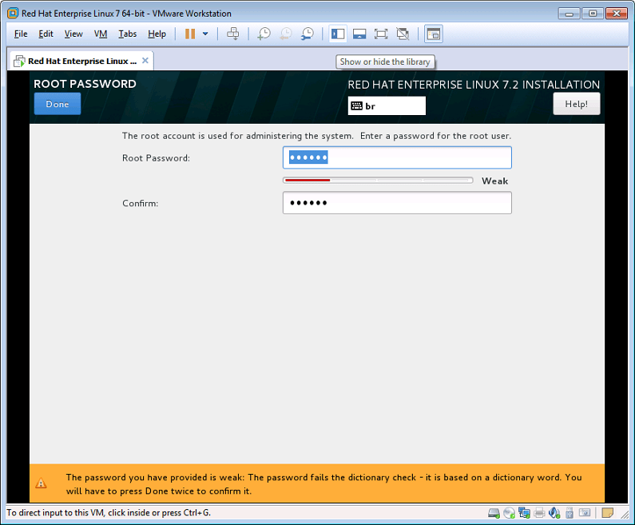
Clique em Done. Talvez seja necessário clicar 2 vezes para confirmar caso a senha seja considerada fraca.
Clique em USER CREATION para criar o seu usuário para acesso.
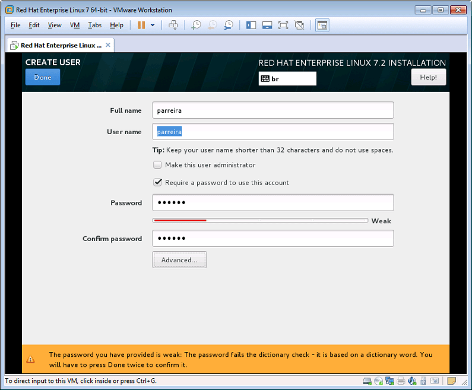
Clique em Done. Talvez seja necessário clicar 2 vezes para confirmar caso a senha seja considerada fraca.
Vamos aguardar o término da instalação.
Iniciando o Sistema
Ao término da instalação clique em _Reboot _no canto inferior esquerdo para reinicializar o sistema.
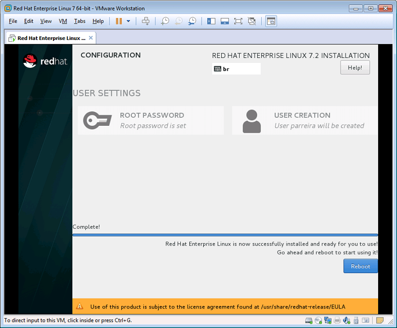
Após a reinicialização o sistema nos solicita a escolher a opção de inicialização.
Vamos escolher a primeira opção e teclar Enter.
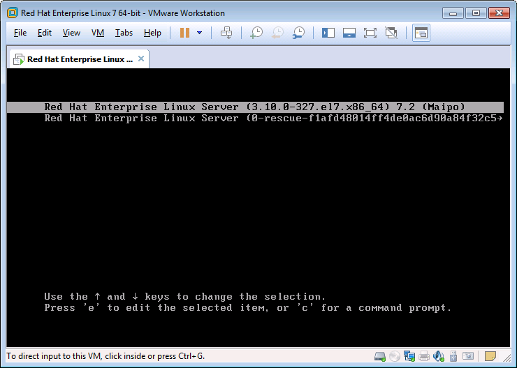
Após a inicialização será necessário ainda informar a informações de licença.
Clique em LICENSE INFORMATION.
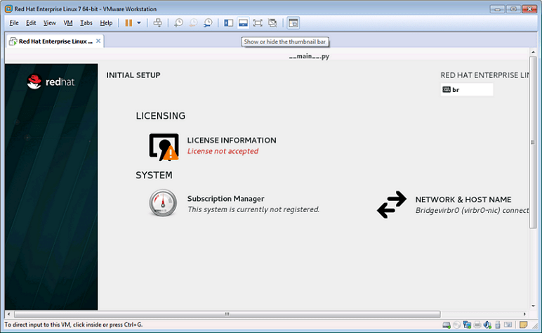
Recomendamos analisar as informações quanto as direitos e deveres estabelecidos e contratados.
Quando estiver ponto marque a caixa I accept the license agreement no canto inferior esquerdo para aceitar os termos apresentados, caso esteja de acordo. Após, clique em _Done _no canto superior direito.
Deixaremos o ítem Subscription Manager não registrado por enquanto pois precisaremos efetuar alguns ajustes mais a frente para realizar o assinatura e usufruir do suporte e atualizações oficiais.
Clique em Finish Configuration no canto inferior direito para prosseguir.
Neste momento devemos ser levados à tela inicial de login. Clique no nome de seu usuário, informe a senha cadastrada.
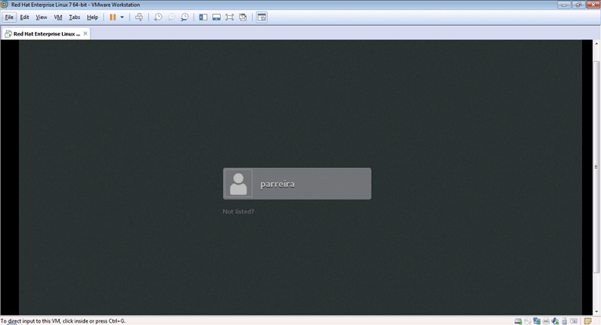
Já na área de trabalho serão apresentados informativos educativos porém, podemos fechar e acessar estas informações a qualquer momento posteriormente para aprender mais sobre o ambiente e sua operação.
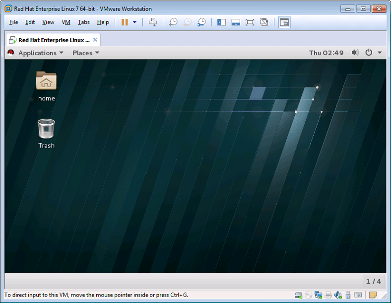
Pronto, nossa instalação básica está completa.
Foi um longo caminho até aqui. Temos agora um ambiente inicial para começar a desenvolver nossos projetos sobre uma plataforma robusta, aceita e certificada pelo mercado.
Considerações Finais
Temos alguns ajustes pós instalação que serão importantes para uma melhor usabilidade do ambiente. Estes serão apresentados em um novo artigo.
Gostaria de agradecer a todos por acompanharem aqui.
Dúvidas e questionamentos não hesitem em postar no comentários que na medida do possível tentarei responder a todas ou buscar mais informações no intuito de ajudar na resolução.
Desejo desde já paz e sucesso a todos em suas jornadas de estudos e evolução.
Grande abraço.
Compartilhe esse post nas redes sociais...